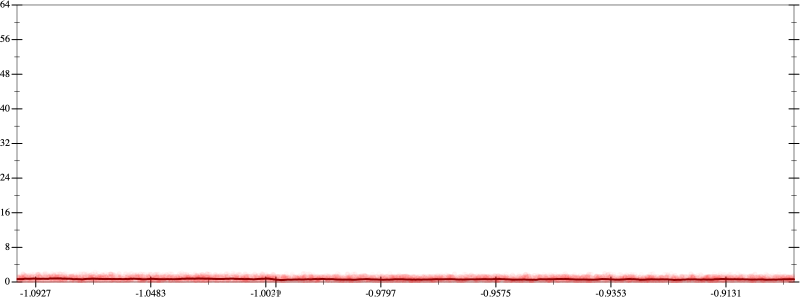
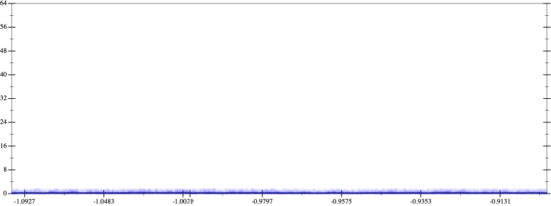
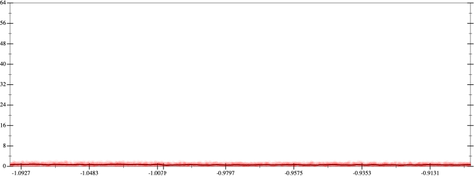
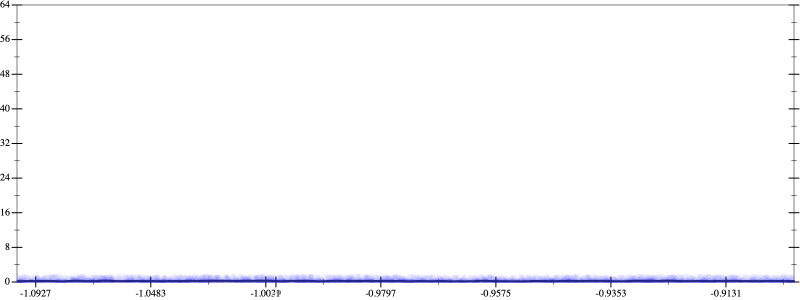

Initial program 0.6
\[\left(12.0 + -48.0 \cdot \left(x \cdot x\right)\right) + 16.0 \cdot \left(\left(\left(x \cdot x\right) \cdot x\right) \cdot x\right)\]
- Using strategy
rm Applied add-sqr-sqrt0.6
\[\leadsto \left(12.0 + -48.0 \cdot \left(x \cdot x\right)\right) + 16.0 \cdot \color{blue}{\left(\sqrt{\left(\left(x \cdot x\right) \cdot x\right) \cdot x} \cdot \sqrt{\left(\left(x \cdot x\right) \cdot x\right) \cdot x}\right)}\]
Applied simplify0.6
\[\leadsto \left(12.0 + -48.0 \cdot \left(x \cdot x\right)\right) + 16.0 \cdot \left(\color{blue}{\left|x \cdot x\right|} \cdot \sqrt{\left(\left(x \cdot x\right) \cdot x\right) \cdot x}\right)\]
Applied simplify0.6
\[\leadsto \left(12.0 + -48.0 \cdot \left(x \cdot x\right)\right) + 16.0 \cdot \left(\left|x \cdot x\right| \cdot \color{blue}{\left|x \cdot x\right|}\right)\]
- Using strategy
rm Applied add-log-exp0.6
\[\leadsto \left(12.0 + -48.0 \cdot \left(x \cdot x\right)\right) + 16.0 \cdot \color{blue}{\log \left(e^{\left|x \cdot x\right| \cdot \left|x \cdot x\right|}\right)}\]
- Using strategy
rm Applied add-log-exp0.6
\[\leadsto \left(12.0 + -48.0 \cdot \left(x \cdot x\right)\right) + \color{blue}{\log \left(e^{16.0 \cdot \log \left(e^{\left|x \cdot x\right| \cdot \left|x \cdot x\right|}\right)}\right)}\]
Applied add-log-exp0.6
\[\leadsto \color{blue}{\log \left(e^{12.0 + -48.0 \cdot \left(x \cdot x\right)}\right)} + \log \left(e^{16.0 \cdot \log \left(e^{\left|x \cdot x\right| \cdot \left|x \cdot x\right|}\right)}\right)\]
Applied sum-log0.6
\[\leadsto \color{blue}{\log \left(e^{12.0 + -48.0 \cdot \left(x \cdot x\right)} \cdot e^{16.0 \cdot \log \left(e^{\left|x \cdot x\right| \cdot \left|x \cdot x\right|}\right)}\right)}\]
Applied simplify0.2
\[\leadsto \log \color{blue}{\left({\left(e^{\left|x \cdot x\right|}\right)}^{\left(16.0 \cdot \left|x \cdot x\right|\right)} \cdot \left(e^{12.0} \cdot {\left(e^{-48.0}\right)}^{\left(x \cdot x\right)}\right)\right)}\]
 
